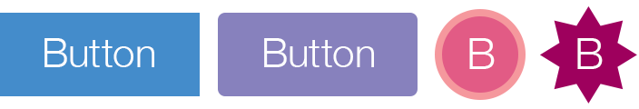
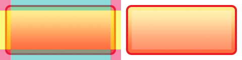

widget.newButton()
Type Function Library widget.* Return value ButtonWidget Revision Release 2024.3703 Keywords widget, button See also ButtonWidget
Overview
Creates a ButtonWidget object.
Syntax
widget.newButton( options )
This function takes a single argument, options, which is a table that accepts the following basic parameters:
id (optional)
String. An optional identification string to assign for the button. Default is widget_button.
x, y (optional)
Numbers. Coordinates for the widget’s x and y center point. These values will be overridden by left and top if those values are defined.
left, top (optional)
Numbers. The left and top position where the widget will be created. If specified, these values override the x and y parameters.
isEnabled (optional)
Boolean. If false, the button will not respond to touch events. Use button:setEnabled() to enable or disable touch events on a button after creation. Default is true (button is enabled).
onPress (optional)
Listener. An optional function to be called when the button is pressed. The callback function does not require testing for event.phase since it only honors "began".
onRelease (optional)
Listener. An optional function to be called when the user releases the button (assuming the touch is still over the button). The callback function does not require testing for event.phase since it only honors "ended".
onEvent (optional)
Listener. An optional function that should only be specified if onPress and onRelease are not set. This callback function allows you to test for the event.phase of "began", "moved", or "ended".
Methods
Basic Visual Options
All buttons accept the following visual parameters in the options table, plus specific parameters for 2-Image, 2-Frame, or 9-Slice button type construction.
label (optional)
String. Text label that will appear on top of the button.
labelAlign (optional)
String. Alignment of the button label. Valid values are left, right, or center. Default is center.
labelColor (optional)
Table. Table of two RGB+A color settings, one each for the default and over states.
labelColor = { default={ 1, 1, 1 }, over={ 0, 0, 0, 0.5 } }
labelXOffset, labelYOffset (optional)
Numbers. Optional x and y offsets for the button label. For example, labelYOffset = -8
font (optional)
String. Font used for the button label. Default is native.systemFont.
fontSize (optional)
Number. Font size (in pixels) for the button label. Default is 14.
emboss (optional)
Boolean. If set to true, the button label will appear embossed (inset effect).
textOnly (optional)
Boolean. If set to true, the button will be constructed via a text object only false.
2-Image Construction
This is the easiest button to construct — just create two image files, one for the default state and another for the over state.

width, height (required)
Numbers. The width and height of the image files.
baseDir (optional)
Constant. The base directory where your custom images are located. Default is your project folder (system.ResourceDirectory).
defaultFile (required)
String. The file name of the button default image
overFile (optional)
String. The file name of the button over image
2-Frame Construction
This method uses two frames from an image sheet — one frame each for the default and over states. For this method, include a reference to the image sheet as the sheet parameter. Then specify the frame numbers from the image sheet as defaultFrame and overFrame respectively.
sheet (required)
ImageSheet. The image sheet object for the button.
defaultFrame (required)
Number. The index number for the default frame of the button
overFrame (required)
Number. The index number for the over frame of the button
Shape Construction
This method allows you to create buttons using the following built-in Corona shape objects:

shape (required)
String. Defines which shape to use for the button body (background). Valid options are "rect", "roundedRect", "circle", or "polygon".
fillColor (optional)
Table. Table of two RGB+A color settings, one each for the default and over states. These colors define the fill color of the shape.
fillColor = { default={ 1, 0.2, 0.5, 0.7 }, over={ 1, 0.2, 0.5, 1 } }
strokeColor (optional)
Table. Table of two RGB+A color settings, one each for the default and over states. These colors define the stroke color of the shape.
strokeColor = { default={ 0, 0, 0 }, over={ 0.4, 0.1, 0.2 } }
strokeWidth (optional)
Number. The width of the stroke around the shape object. Applies only if strokeColor is defined.
width, height (optional)
Numbers. The width and height of the button shape. Only applies to "rect" or "roundedRect" shapes.
cornerRadius (optional)
Number. Radius of the curved corners for a "roundedRect" shape. This value is ignored for all other shapes.
radius (optional)
Number. Radius for a "circle" shape. This value is ignored for all other shapes.
vertices (optional)
Array. An array of x and y coordinates to define a "polygon" shape. These coordinates will automatically be
vertices = { -20, -25, 40, 0, -20, 25 }
9-Slice Construction
This method uses 9 slices from an image sheet which are assembled internally to create

width, height (required)
Numbers. The flexible width and height of the 9-slice button.
sheet (required)
ImageSheet. The image sheet object for the button.
middleFrame, middleOverFrame (required)
Numbers. The default
topLeftFrame, topLeftOverFrame (required)
Numbers. The default
topMiddleFrame, topMiddleOverFrame (required)
Numbers. The default
topRightFrame, topRightOverFrame (required)
Numbers. The default
middleRightFrame, middleRightOverFrame (required)
Numbers. The default
bottomRightFrame, bottomRightOverFrame (required)
Numbers. The default
bottomMiddleFrame, bottomMiddleOverFrame (required)
Numbers. The default
bottomLeftFrame, bottomLeftOverFrame (required)
Numbers. The default
middleLeftFrame, middleLeftOverFrame (required)
Numbers. The default
Examples
Default
local widget = require( "widget" )
-- Function to handle button events
local function handleButtonEvent( event )
if ( "ended" == event.phase ) then
print( "Button was pressed and released" )
end
end
-- Create the widget
local button1 = widget.newButton(
{
left = 100,
top = 200,
id = "button1",
label = "Default",
onEvent = handleButtonEvent
}
)
2-Image
local widget = require( "widget" )
-- Function to handle button events
local function handleButtonEvent( event )
if ( "ended" == event.phase ) then
print( "Button was pressed and released" )
end
end
local button1 = widget.newButton(
{
width = 240,
height = 120,
defaultFile = "buttonDefault.png",
overFile = "buttonOver.png",
label = "button",
onEvent = handleButtonEvent
}
)
-- Center the button
button1.x = display.contentCenterX
button1.y = display.contentCenterY
-- Change the button's label text
button1:setLabel( "2-Image" )
2-Frame
local widget = require( "widget" )
-- Function to handle button events
local function handleButtonEvent( event )
if ( "ended" == event.phase ) then
print( "Button was pressed and released" )
end
end
-- Image sheet options and declaration
-- For testing, you may copy/save the image under "2-Frame Construction" above
local options = {
width = 240,
height = 120,
numFrames = 2,
sheetContentWidth = 480,
sheetContentHeight = 120
}
local buttonSheet = graphics.newImageSheet( "widget-button-file.png", options )
-- Create the widget
local button1 = widget.newButton(
{
sheet = buttonSheet,
defaultFrame = 1,
overFrame = 2,
label = "button",
onEvent = handleButtonEvent
}
)
-- Center the button
button1.x = display.contentCenterX
button1.y = display.contentCenterY
-- Change the button's label text
button1:setLabel( "2-Frame" )
Shape
local widget = require( "widget" )
-- Function to handle button events
local function handleButtonEvent( event )
if ( "ended" == event.phase ) then
print( "Button was pressed and released" )
end
end
-- Create the widget
local button1 = widget.newButton(
{
label = "button",
onEvent = handleButtonEvent,
emboss = false,
-- Properties for a rounded rectangle button
shape = "roundedRect",
width = 200,
height = 40,
cornerRadius = 2,
fillColor = { default={1,0,0,1}, over={1,0.1,0.7,0.4} },
strokeColor = { default={1,0.4,0,1}, over={0.8,0.8,1,1} },
strokeWidth = 4
}
)
-- Center the button
button1.x = display.contentCenterX
button1.y = display.contentCenterY
-- Change the button's label text
button1:setLabel( "Shape" )
9-Slice
local widget = require( "widget" )
-- Function to handle button events
local function handleButtonEvent( event )
if ( "ended" == event.phase ) then
print( "Button was pressed and released" )
end
end
-- Image sheet options and declaration
-- For testing, you may copy/save the image under "9-Slice Construction" above
local options = {
frames =
{
{ x=0, y=0, width=21, height=21 },
{ x=21, y=0, width=198, height=21 },
{ x=219, y=0, width=21, height=21 },
{ x=0, y=21, width=21, height=78 },
{ x=21, y=21, width=198, height=78 },
{ x=219, y=21, width=21, height=78 },
{ x=0, y=99, width=21, height=21 },
{ x=21, y=99, width=198, height=21 },
{ x=219, y=99, width=21, height=21 },
{ x=240, y=0, width=21, height=21 },
{ x=261, y=0, width=198, height=21 },
{ x=459, y=0, width=21, height=21 },
{ x=240, y=21, width=21, height=78 },
{ x=261, y=21, width=198, height=78 },
{ x=459, y=21, width=21, height=78 },
{ x=240, y=99, width=21, height=21 },
{ x=261, y=99, width=198, height=21 },
{ x=459, y=99, width=21, height=21 }
},
sheetContentWidth = 480,
sheetContentHeight = 120
}
local buttonSheet = graphics.newImageSheet( "widget-button-9slice.png", options )
-- Create the widget
local button1 = widget.newButton(
{
width = 340,
height = 100,
sheet = buttonSheet,
topLeftFrame = 1,
topMiddleFrame = 2,
topRightFrame = 3,
middleLeftFrame = 4,
middleFrame = 5,
middleRightFrame = 6,
bottomLeftFrame = 7,
bottomMiddleFrame = 8,
bottomRightFrame = 9,
topLeftOverFrame = 10,
topMiddleOverFrame = 11,
topRightOverFrame = 12,
middleLeftOverFrame = 13,
middleOverFrame = 14,
middleRightOverFrame = 15,
bottomLeftOverFrame = 16,
bottomMiddleOverFrame = 17,
bottomRightOverFrame = 18,
label = "button"
}
)
-- Center the button
button1.x = display.contentCenterX
button1.y = display.contentCenterY
-- Change the button's label text
button1:setLabel( "9-Slice" )